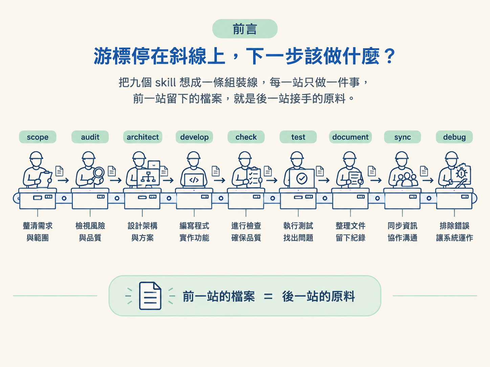
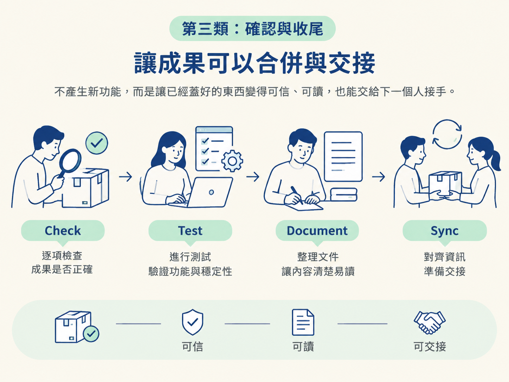
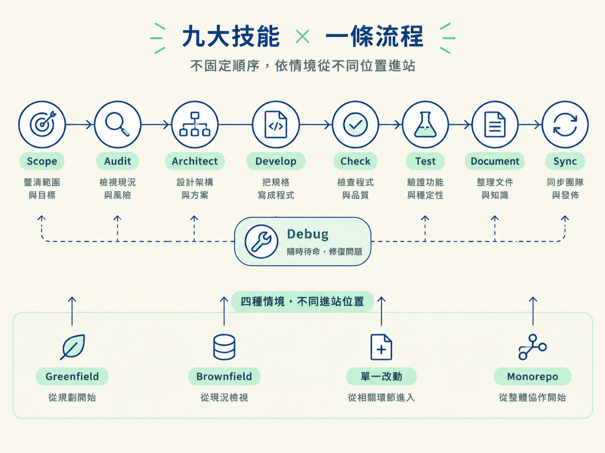

看完這一節，你應該能用一句話說出九個 skill 各自的職責，也能分辨哪些 skill 負責做決定與產出，哪些負責確認、整理與收尾。
你可能手上有一個模糊的產品想法，也可能正在處理壞掉的畫面，或是一個做到一半的功能。你打開 opencode，游標停在斜線上，心裡想的是：「接下來該輸入哪個指令？」
第一次看到這套 JSM 工程工作流時，九個 skill 的名字確實有點像一張陌生的地圖：scope、audit、architect、develop、check、test、document、sync、debug。它們看起來像九套互不相干的工具，彷彿得先全部背起來，才敢開始工作。
其實，這九個 skill 比較像一條組裝線上的九個工作站。每一站只負責一道工序，前一站留下的檔案，就是後一站接手時的原料。你現在不需要記住每站的所有操作，只要先搞清楚：這一站解決什麼問題、會留下什麼東西。

一個改動要從模糊想法走到「已出貨、已驗證、已寫成文件」，中間每個階段都有對應的 skill 負責。而且重要的狀態不只存在對話裡，也會寫進 repo 的檔案。
這就像把工作進度寫在工單上，而不是只記在某個人的腦中。你關掉終端機、換一台電腦，或請同事接手時，專案目前走到哪裡仍然留在磁碟上。也因為每個階段都有明確責任，檔案不會變成「誰都能改、最後沒人知道誰負責」的共用抽屜。
另一個容易誤會的地方是：不是每個改動都要跑完九個 skill。 這套流程允許你只經過真正需要的工作站。修一個 bug，可能只需要 /debug；一個小改動，可能是 /develop 接著跑 /check verify。
先用一張表建立全貌。表中的「主要產出／動到的檔案」，指的是這個 skill 在 repo 裡主要負責的檔案類型；具體細節會在後面的節點展開。
| Skill | 一句話職責 | 主要產出／動到的檔案 |
|---|---|---|
scope | 把產品想法整理成一份活的粗粒度計畫，並隨出貨持續更新 | docs/scope/ |
audit | 寫出所有 skill 都會讀取的 AGENTS.md context 檔 | AGENTS.md＋CLAUDE.md |
architect | 把需要承擔後果的技術決策寫成 build spec | docs/specs/ |
develop | 根據 spec 建立功能，執行 migration，並推進 scope | app 程式碼、design.md |
check | 在 merge 前確認成果：verify 跑真實 app，review 由另一個模型檢查程式碼 | docs/reviews/ |
test | 為剛改動的程式碼補上測試 | 你的測試目錄 |
document | 根據真實 diff 撰寫 PR 文字、changelog、release note 或 postmortem | PR 內文、CHANGELOG.md、docs/releases/ |
sync | 讓 AGENTS.md、scope 與 spec 狀態對齊程式碼目前的樣子 | 上述 durable 檔案 |
debug | 找出並修正 bug 的根因，再交付 regression test 給 test | app 程式碼 |
如果一次記九個名字，容易看完就忘。更好的方式，是先把它們按流程角色分成四類。你只要先記住每一類在整條線上的位置，之後再回表格查細節即可。
scope、audit、architect 位在流程前段。它們的共同點是：把還不存在的東西，先整理成 repo 裡看得見的檔案。
scope 處理「要蓋什麼，以及先做什麼」。它產出的不是程式碼，而是一份粗粒度、會持續變動的計畫。功能開始開發時，計畫會被推進；功能出貨後，計畫也會回頭對齊真實狀態。
architect 處理「要怎麼蓋」裡那些不能隨手猜的部分。所謂承重決策，就是一旦選錯，後面可能得整片重做的選擇，例如資料庫、登入方式或頁面結構。這些決定會經過設計對話，最後寫成 docs/specs/ 裡的 spec，成為後續建置時可以依循的依據。
audit 處理的則不是「要做什麼」，而是「這個專案現在是什麼樣子」。它讀取真實的專案，將 stack、指令與開發慣例寫入 AGENTS.md，讓後續每個 skill 都能先讀到同一份 context，不必重新猜測。CLAUDE.md 是一個很薄的指標檔，只負責指向 AGENTS.md，避免同一份資訊分散在兩處，最後逐漸漂移。
這一類只有一個 skill：develop。它讀取 spec，真正把功能蓋出來，可能是 UI、後端，或兩者都有。
develop 也是唯一會推進 feature 狀態的 skill。功能落地後，它會把對應 spec 的狀態從 Proposed 推進到 In Progress，並更新 scope。但它不會直接把 feature 標成完成，因為「程式寫好了」和「功能已經被驗證」是兩件不同的事。
check、test、document、sync 位在流程後段。它們不負責產生新功能，而是讓已經蓋好的東西變得可信、可讀，也能交給下一個人接手。

check 有兩種模式。/check verify 會驅動真正跑起來的 app，確認功能是否按照 spec 運作，而不是只看測試檔案是否通過。/check review 則會找不同家族的模型做資深程式碼審查，降低同一個模型檢查自己作品時過度認同原本設計的風險。它的產出是 docs/reviews/ 裡的 findings，而且只讀不改。
test 會為剛改動的程式碼補上測試，把需要長期保留的行為鎖住。它會先確認專案使用哪套測試框架；第一次問過後就記住，之後不用反覆詢問。
document 只根據真實的 commit 與 diff 撰寫人看得懂的文字，例如 PR 內文、changelog、release note 或 postmortem。它不寫程式，也不寫 spec。
sync 是 merge 前的最後整理。它檢查程式碼目前的樣子，並把 durable 檔案做外科手術式的對齊。例如建置過程中形成了新的開發慣例，就補回 AGENTS.md，讓下一次工作不必重新發現同一件事。
debug 不在固定流程中的某個位置，它像待命的維修站：任何時候出現問題，都可以呼叫它。
它只做一件事：找出並修掉真正的根因。它會先穩定重現問題，再縮小範圍；每次只驗證一個假設，找到原因後做最小修補，最後把 regression test 交給 test。這樣同一隻 bug 才不會隔一段時間又悄悄回來。
debug 不需要先有 scope，也不需要先有 spec 才能執行。它和固定的建置流程是平行關係，而不是其中一個必經步驟。
九個 skill 是一條組裝線上的九個工作站，不是九個得全部背下來的工具。前段的scope、audit、architect，把想法、專案背景與技術決策寫成檔案；中段的develop，把 spec 蓋成程式；後段的check、test、document、sync，讓成品變得可信、可讀、可交接；debug則在任何時候處理壞掉的東西。真正把它們串起來的，是磁碟上的檔案，而不是對話的記憶。
現在你已經知道每一站負責什麼，下一個問題就會自然出現：如果它們排成一條線，順序應該怎麼走？而且這條線不是固定的。greenfield、brownfield、單一改動與 monorepo，各自都有不同的進站位置。下一節會把整條 pipeline 攤開，對照這四種情境看它們該從哪裡開始。
